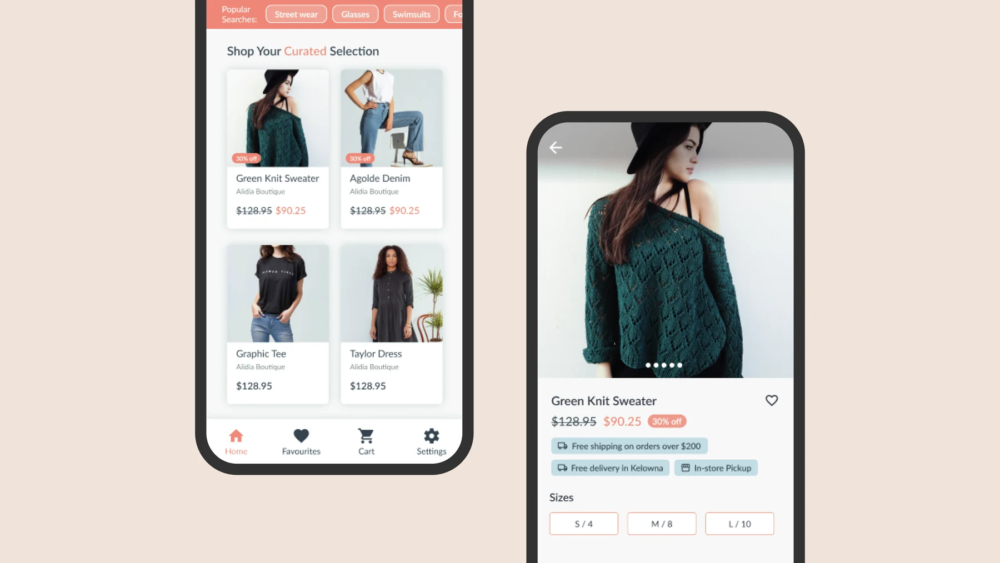
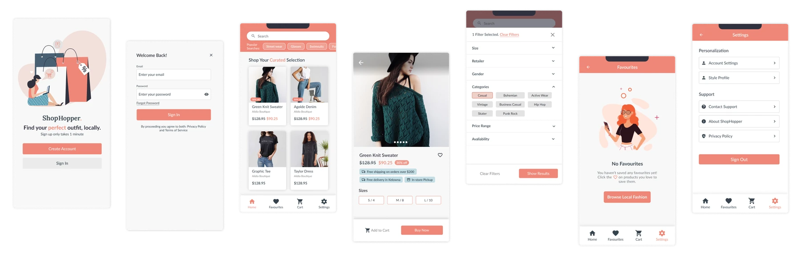
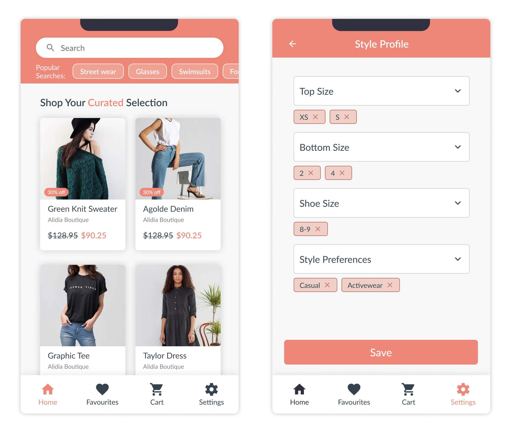
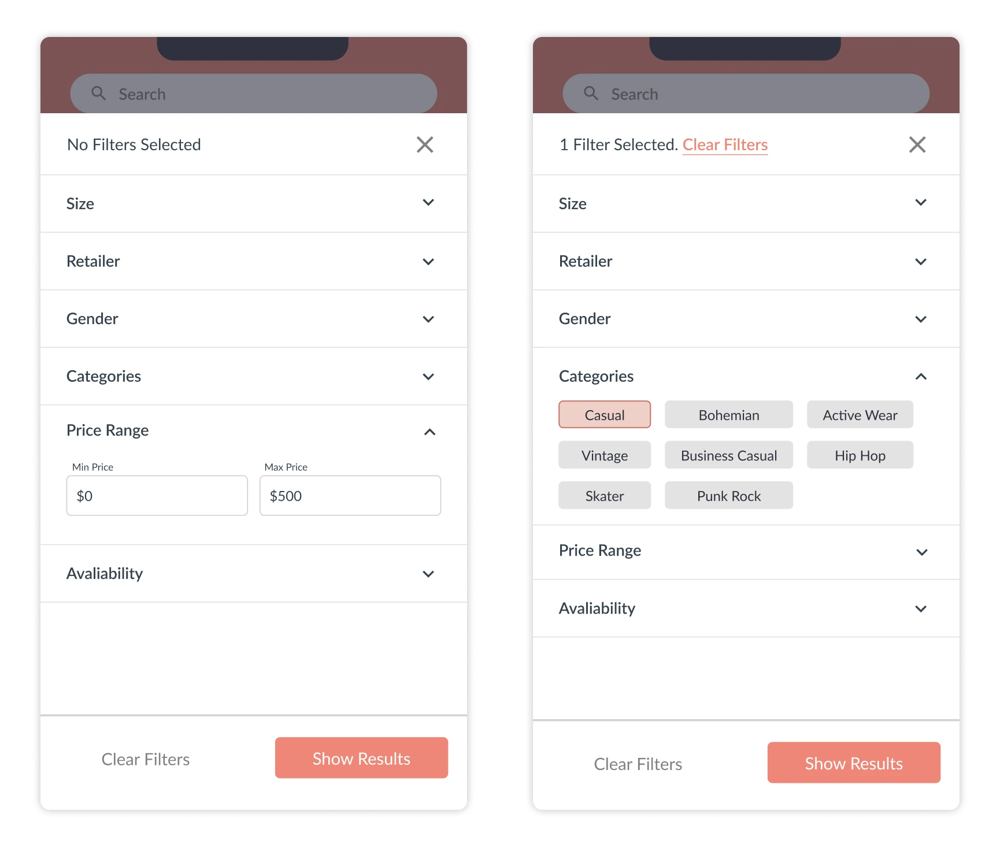
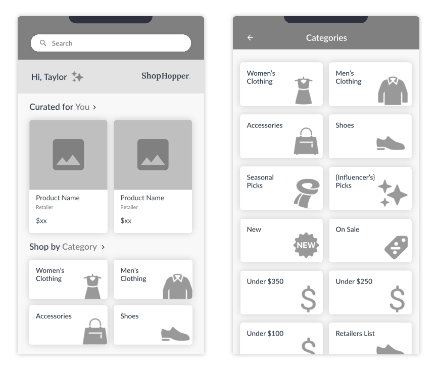

Side quest — ShopHopper — Fashion app
A fashion app that finds your style at local boutiques
ShopHopper matches shoppers with outfits in their style and size, all from local small businesses. I volunteered with the startup, led product design for its launch, then used research to fix how people browse.

Overview
An app to launch, with limited time and limited development resources.
ShopHopper is a startup I volunteered my time with, alongside my full-time work. When I joined, it was getting ready to launch its app. I worked closely with the CEO and the developers to lead product design, from user flows to high-fidelity UI.
With so little time and so few developers, I focused on defining and building only the most important features. The CEO and I ran two rounds of user research to decide what they were.

Curation
Tell us your style and size, and we’ll find the best local pieces, on sale first.
Fashion curation is at the centre of ShopHopper’s value. Shoppers tell us their favourite styles and their sizes, and we find the best pieces from local shops for them, prioritizing what’s on sale. The goal is a relaxed way to shop for people who want to support local businesses.
Behind it is a complex back-end algorithm. The job of the interface was to make it feel simple: saving people time and introducing them to new, unique fashion.

Search & filters
For when shoppers want to explore, not just be shown.
Curation is low effort, but we also wanted people to explore local shops and find other things they might like. Shoppers can search, then narrow the results by price, store, style and more. The final design came out of a few rounds of usability testing.

Launch
The beta launched in 2022, and people liked what they found.
We were thrilled with the response: lots of positive feedback on social media and in our usability testing sessions.
Downloads in the first month
Rounds of user research to choose the launch features
People in usability testing after launch
Categories
Testing kept surfacing the same problem: browsing wasn’t working.
After launch, I ran usability testing and research sessions with around 30 people, watching them use the app to find roadblocks. One issue came up in almost every session: browsing. The way the app let people browse just wasn’t cutting it.
Fixing it also served the business, because helping people find more products meant more purchases.
Business driver
How might we help shoppers find more products, to increase purchases?
Design challenge
How can we design browsing that’s seamless and also familiar?
Constraints
Back-end database restrictions, and the key steps someone needs to find the right product.
Shop by category
Clear categories on the home screen and their own page: clothing, accessories, shoes, seasonal and influencer picks, new, on sale, and by price.
Because…
Categories are how people already browse stores, online and off. I worked closely with the developers on the wireframes, so the new browsing would fit the back-end’s categorization system.

More side quests
noggn →